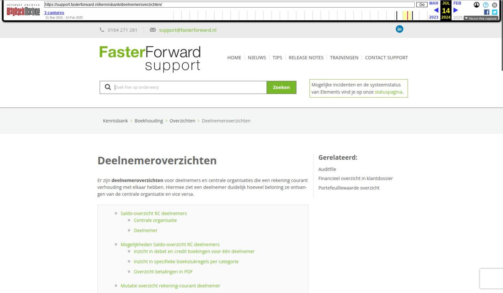

Deelnemeroverzichten

Tekstinhoud
Deelnemeroverzichten
Er zijn deelnemeroverzichten voor deelnemers en centrale organisaties die een rekening courant verhouding met elkaar hebben. Hiermee ziet een deelnemer duidelijk hoeveel beloning ze ontvangen van de centrale organisatie en vice versa.
Saldo-overzicht RC deelnemers
Centrale organisatie
Deelnemer
Mogelijkheden Saldo-overzicht RC deelnemers
Inzicht in debet en credit boekingen voor één deelnemer
Inzicht in specifieke boekstukregels per categorie
Overzicht betalingen in PDF
Mutatie overzicht rekening-courant deelnemer
Saldo-overzicht RC deelnemers
Centrale organisatie
Voor centrale organisaties, zoals het beheerkantoor van een franchiseketen, is er een overkoepelend overzicht: Saldo-overzicht RC deelnemers. Hier zien zij hoeveel ze aan hun deelnemers moeten uitbetalen of vorderen en hoe deze bedragen zijn opgebouwd. De gebruikers die werken in de administratie van de CO kunnen het overzicht benaderen via Financieel – Overzichten – Saldo-overzicht RC deelnemers.
Let op: Boekingen van voor de 13 juli 2021 krijgen standaard de categorie 'Overig'.
Deelnemer
Als deelnemer beschik je ook over een saldo-overzicht RC deelnemers. Met dit overzicht ziet de deelnemer een overzicht met producten en bijbehorende inkomsten en kosten. Daarnaast kan de deelnemer filteren op specifieke jaren of periodes. Zo weet een deelnemer precies waar zijn inkomsten vandaan komen en waaruit dit is opgebouwd. De deelnemer ziet alleen zijn eigen gegevens, niet die van andere kantoren. De gebruikers die werken vanuit een deelnemeradministratie kunnen het overzicht bereiken via Financieel – Overzichten – Deelnemeroverzichten.
De centrale organisatie stelt in of een deelnemer dit saldo-overzicht mag inzien.
Mogelijkheden Saldo-overzicht RC deelnemers
Inzicht in debet en credit boekingen voor één deelnemer
De centrale organisatie ziet in het overzicht alle deelnemers staan. Door op de naam van de deelnemer te klikken, krijg je per categorie de debet en credit bedragen te zien voor deze specifieke deelnemer. De deelnemer ziet direct de categorieën en de gegevens van zijn kantoor.
Inzicht in specifieke boekstukregels per categorie
Door op een categorie te klikken, krijg je inzicht in specifieke boekstukregels per categorie. Links kan je eventueel filters instellen om de resultaten te verfijnen.
Overzicht betalingen in PDF
Wanneer de deelnemer wordt uitbetaald, kan de centrale organisatie dit overzicht ook downloaden als PDF. Dit overzicht kan je dan naar je deelnemer toesturen. Hiervoor ga je naar Financieel – Betalingen Selecteren – Betalingen – Rekening-courant deelnemer – Verrichte betalingen. Voor de betalingen met type 'Uitbetaling RC deelnemer' is het mogelijk om een PDF bestand uit te draaien. Dit via het vergrootglasicoon was in de regel staat.
Wanneer je op het vergrootglas krijg je daar een overzicht per relatie. Via het downloadicoon in de kolom PDF kan je het bestand downloaden.
In het overzicht staat per categorie wat het debet en credit bedrag is. Daarnaast wat het saldo te vorderen van de centrale organisatie is. Ook staat per categorie alle boekregels uitgewerkt.
Mutatie overzicht rekening-courant deelnemer
Dit is een overzicht met alle historische mutaties op de rekening-courant deelnemer. De centrale organisatie kan dit overzicht benaderen via Financieel – Overzichten – mutatie-overzicht rekening-courant deelnemers. De deelnemers kunnen het overzicht terugvinden via Financieel – Overzichten – Deelnemeroverzichten. Ook hier ziet de centrale organisaties alle deelnemers terug en de deelnemer alleen zijn eigen gegevens.
Laatste update: 24 februari 2023
Was deze informatie nuttig?
Ja Nee